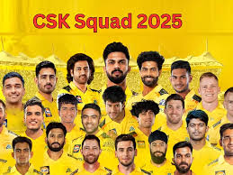

Chennai Super Kings
Five-time IPL champions known for consistency
About Chennai Super Kings

City: Chennai, Tamil Nadu
Home Ground: M.A. Chidambaram Stadium (Chepauk)
Captain (2025): MS Dhoni (Ruturaj Gaikwad for first 5 matches)
Owners: India Cements (Chennai Super Kings Cricket Ltd.)
Established: 2008
CSK, nicknamed the "Yellow Army," boasts one of the largest fanbases in the IPL. Known for their strategic gameplay and leadership under MS Dhoni, they are the joint-most successful IPL franchise alongside Mumbai Indians.
Records and Achievements
IPL Titles
5 (2010, 2011, 2018, 2021, 2023)
Playoff Appearances
12 (most in IPL history)
Notable Record
Highest team total: 246/5 vs Rajasthan Royals (2010)
Key Player Stat
MS Dhoni: Most matches as captain in IPL (226)
2023 Highlight
Won IPL 2023 by defeating Gujarat Titans by 5 wickets, with Ravindra Jadeja’s match-winning six and four off the last two balls.